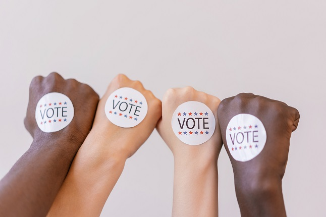

☰
Article
HOME
ARTICLE
HOME
ARTICLE
Kategori
Politik
Kesehatan
Fashion
dst.
TAB IKLAN
-- Trending Topic --
Masa Depan Demokrasi di Era Digital
Rabu, 11 November 2022
Baca
Article

Pengaruh Lobi Politik terhadap Kebijakan Publik
Selasa, 29 Mei 2022
Baca
Kebangkitan Populisme dan Implikasinya Terhadap Politik Global
Jumat, 28 Mei 2022
Baca
Mengatasi Krisis Kesehatan Mental di Era Modern
Sabtu, 27 Mei 2022
Baca
Pentingnya Vaksinasi dalam Pencegahan Penyakit Menular
Senin, 26 Mei 2022
Baca
Gaya Hidup Sehat untuk Mencegah Penyakit Kronis
Kamis, 31 Juli 2023
Baca
Tren Fashion Ramah Lingkungan: Masa Depan Industri Mode
Jumat, 1 Agustus 2023
Baca
Evolusi Streetwear: Dari Subkultur ke Arus Utama
Sabtu, 2 Agustus 2023
Baca
Pentingnya Pakaian Fungsional dalam Fashion Modern
Senin, 4 Agustus 2023
Baca